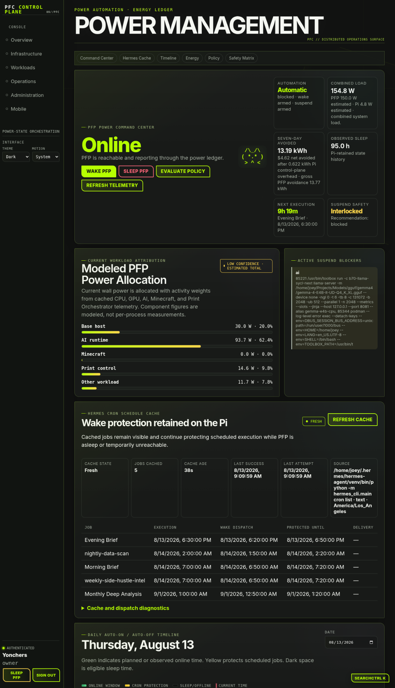
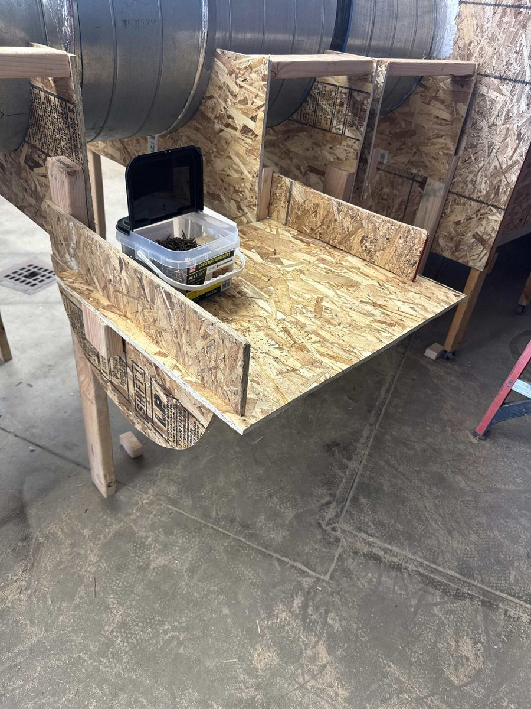

Joseph Dwyer · Mechanical Engineering
I build practical systems for real machines.
I’m a Sacramento State mechanical engineering student working across mechanical design, controls, software, fabrication, and testing. My strongest projects connect hardware, software, and the people who use them—and leave the system easier to operate, troubleshoot, and improve.
ENGINEERING PORTFOLIO
JD
design / build / verify
LOCAL AI
MOTION
FABRICATION
TEST
CONTROLS
Print Orchestrator gives me one place to manage a mixed printer fleet. PFC Supervisor lets the AI server sleep safely without missing scheduled work. These demos follow the live systems while keeping private services and real controls disconnected.
The tools I use to run the printers and AI server
Print Orchestrator gives me one place to manage a mixed printer fleet. PFC Supervisor lets the AI server sleep safely without missing scheduled work. The demos mirror the live tools without exposing private services or real controls.
Print Orchestrator
One place to monitor and manage every printer
Print Orchestrator brings PrusaLink and Moonraker/Klipper machines into one operator view. It keeps each printer’s real capabilities visible while putting jobs, cameras, power, part detection, temperatures, files, and recovery tools in the same place.
- Brings PrusaLink and Moonraker/Klipper machines into the same fleet view
- Keeps connectivity, temperatures, cameras, jobs, and power states visible together
- Shows plain-language recovery states instead of hiding problems behind generic errors
- Supports per-printer controls without pretending every machine has the same capabilities
The interactive panel is a safe portfolio version of the live dashboard shown in your reference capture.
PDPrint Dashboardfabrication systems / live fleet control
API online
Updated 9:08:37 AM
Notifications 36
Print Orchestrator Administrator ADMINISTRATOR
Print Orchestrator / Fleet overview
1 of 3 printers online
Two printers are currently unreachable, but the connected fleet remains available.Printers
Power, connectivity, jobs, cameras, and detection are shown as separate machine states.
Prusa Core One
PRUSALINK · updated just now ● live snapshot · primary camera
● live snapshot · primary cameraPart detection
Detection off
Primary camera · score 0.079 · clear ≤ 0.030 · part ≥ 0.065 · 17/3 confirmations
Power
ON
Prusa Core One Outlet · 18.3 W · updated now
Elapsed
—Remaining
—Estimated total
—
—Remaining
—Estimated total
—
Alpine
MOONRAKER / KLIPPER · updated 9.5s agoLoading camera snapshot…
Part detection
Detection offline
Primary camera · score 0.000 · clear ≤ 0.035 · waiting for first scan.
Power
PLUG OFFLINE
Alpine Outlet · last update 9s ago
Klipper console card
Show a movable console on the Fleet pageElapsed
—Remaining
—Estimated total
—
—Remaining
—Estimated total
—
E3NG
MOONRAKER / KLIPPER · updated 8.5s agoNo camera configured
Part detection
Needs setup
No enabled camera is configured for part detection.
Power
NOT MAPPED
No Kasa plug is mapped to this printer.
Klipper console card
Show a movable console on the Fleet pageElapsed
—Remaining
—Estimated total
—
—Remaining
—Estimated total
—
PFC Supervisor
A safer way to let the AI server sleep when it is idle
PFC coordinates sleep and wake behavior for the main AI server while a low-power Pi keeps schedules, wake protection, status, and recovery logic available. The current dashboard snapshot records 95.0 hours of sleep and estimates 13.19 kWh avoided over seven days, with the estimate and its measurement limits shown together.
The current snapshot combines observed sleep history with configured power baselines. The sleep time is retained from real operation; avoided energy and dollar values remain estimates until direct host metering is added.
- Checks active AI, Minecraft, print-control, and background workloads before sleep
- Keeps Hermes schedules cached on the low-power Pi so jobs can still wake the server
- Tracks observed sleep, estimated avoided energy, and projected savings over time
- Explains exactly which safety rule allowed or blocked a suspend decision
POWER AUTOMATION · ENERGY LEDGER
POWER MANAGEMENT
— PFP POWER COMMAND CENTER
Online
PFP is reachable and reporting through the power ledger.— CURRENT WORKLOAD ATTRIBUTION
Modeled PFP Power Allocation
Current wall power is allocated with activity weights from CPU, GPU, AI, Minecraft, and Print Orchestrator telemetry.— ENERGY INTELLIGENCE · 30 DAYS
What the idle-time policy is saving
The ledger separates actual consumption, estimated avoided energy, and the always-on baseline so the estimate is inspectable.ActualAvoidedBaseline
Measurement note: most PFP energy is currently estimated from configured wattage baselines. A direct meter source will improve attribution and savings accuracy.
— RUNTIME FLEET
— PRIMARY ROUTE · ADOPTED SYSTEMD SERVICE
Qwen3.6-35B-A3B-UD-Q5_K_XL
● endpoint ready- Endpoint
- 0.0.0.0:8080
- Backend
- llama.cpp GGUF
- Context
- 196608
- GPU layers
- 99
- Identity source
- Live /props · authoritative
— AUXILIARY ROUTE · ADOPTED SYSTEMD SERVICE
gemma-4-E4B-it-UD-Q4_K_XL
● endpoint ready- Endpoint
- 127.0.0.1:8081
- Backend
- llama.cpp GGUF
- Context
- 131072
- GPU layers
- 0
- Identity source
- Live /props · authoritative
— LIVE INFERENCE ACTIVITY
Prompt and generation telemetry
Endpoint telemetry separates prompt processing, queued work, and generation without rescanning the model inventory.— WAKE & GPU RECOVERY
Runtime reconciliation
Qwen is only accepted as healthy after endpoint, process, model identity, and required Intel GPU offload checks pass.Qwen3.6-35B-A3B-UD-Q5_K_XL: GPU offload verification is required before the runtime can be accepted.
— HERMES CRON SCHEDULE CACHE
Wake protection retained on the Pi
Cached jobs stay visible and continue protecting scheduled execution while PFP is asleep or temporarily unreachable.| Job | Execution | Wake dispatch | Protected until |
|---|---|---|---|
| Evening Brief | 8/13/2026, 6:30 PM | 6:20 PM | 6:50 PM |
| nightly-data-scan | 8/14/2026, 2:00 AM | 1:50 AM | 2:20 AM |
| Morning Brief | 8/14/2026, 7:00 AM | 6:50 AM | 7:20 AM |
| weekly-side-hustle-intel | 8/14/2026, 7:00 AM | 6:50 AM | 7:20 AM |
| Monthly Deep Analysis | 9/1/2026, 1:00 AM | 12:50 AM | 1:20 AM |
— DAILY AUTO-ON / AUTO-OFF TIMELINE
Thursday, August 13
Green shows observed online time. Yellow protects scheduled jobs. Dark space is eligible sleep time.Planned
Observed
Planned online 0.5 h · sleep 23.5 h · projected combined 0.277 kWh including Pi 0.084 kWh · net avoided 3.32 kWh ($1.16).
— SUSPEND DECISION ENGINE
Subsystem Eligibility Matrix
Unknown and stale states are explicit. With the safety default enabled, either state blocks automatic suspend.— PREDICTIVE RECOMMENDATIONS
Advisory Schedule Intelligence
Recommendations come from retained wake and sleep transitions and never change policy without an explicit save.PFP often becomes idle near 17:15. Review the end of that day's availability window.
41% confidence · 13 observations · advisory onlyPFP often wakes near 10:45. Consider an availability window starting 10 minutes earlier.
41% confidence · 13 observations · advisory onlyProjects
A closer look at the work
Open any card to bring up the full project inside this site. Each project has its own tabs for the overview, design decisions, evidence, results, and project-specific material such as power savings, benchmarks, or sponsorship.
 01Working system
01Working systemPrinter fleet management
Print Orchestrator
Monitoring, cameras, power, detection, and recovery in one fleet view
0213.19 kWh / 7 daysServer power management
PFC Supervisor
Safe sleep/wake automation, schedule protection, runtime checks, and energy tracking 03
03Local AI infrastructure
B70 local AI server
Custom hardware, local inference, benchmarking, orchestration, and applied engineering tools 04
04Custom motion platform
E3NG CoreXY conversion
CoreXY mechanics, Klipper, networked electronics, calibration, and commissioning 05
05Printer commissioning and production
Voron printer systems
Enclosed CoreXY systems, technical materials, maintenance, and repeatable workflows 06
06Motorsports product development
Metuned digital dash
Digital dash concept, enclosure design, PCB packaging, cooling, and product direction 07
07Team leadership and fabrication
Sierra College Motorsports
Race preparation, repairs, sponsorship, community events, and trackside execution 08$750 SendCutSend sponsorship
08$750 SendCutSend sponsorshipME190 senior design
Hybrid hand-actuated espresso machine
Hybrid espresso system, controls integration, sponsored fabrication, and technical documentation 09
09Appliance and airflow testing
UEI energy-efficiency testing
Controlled environments, CFM instrumentation, repeatable setup, and documentation 10
10Industrial robotics coursework
ABB and Rexroth robotics lab
ABB robot hardware, Rexroth controllers, safety systems, I/O, and supervised lab work
11Manufacturing and equipment support
Makerspace and manufacturing support
CAD/CAM, CNC, laser systems, operator training, finishing, and equipment uptimeLocal AI development
The B70 server is where I test models and build tools around them
I use the server for more than benchmark numbers. It hosts local inference services, supports the printer and power-control projects, and gives me a repeatable place to compare models for supervision, coding, shell work, debugging, and recovery.
Infrastructure
Custom B70 hardware, Linux services, local endpoints, private networking, model storage, and operational monitoring.
Model evaluation
Role-specific testing for supervision, scope control, coding, shell use, debugging, recovery, and throughput.
Applied systems
Print Orchestrator, PFC Supervisor, Hermes scheduling, notification workflows, and AI-assisted engineering tools.
B70 local LLM results
Generation-rate benchmark matrix

Current direction
Fast MoE models for interactive engineering work
Qwen3/Qwen3.6 and small Gemma variants provide the strongest balance of speed, capability, and practical memory use on the active system.
private inferencemanager / worker testsllama.cpp tuning
| Model | Class | Size | Generation | Relative |
|---|---|---|---|---|
| qwen2.5-0.5b-instruct-q4_k_m | Dense tiny | 0.46 GiB | 223.42 tok/s | |
| gemma-4-E2B-it-UD-Q4_K_XL | Small Gemma | 2.97 GiB | 128.83 tok/s | |
| Qwen3-30B-A3B-Instruct-2507-Q4_K_M | MoE | 17.28 GiB | 93.31 tok/s | |
| gemma-4-E4B-it-UD-Q4_K_XL | Small Gemma | 4.77 GiB | 87.54 tok/s | |
| gemma-4-26B-A4B-it-UD-Q4_K_M | MoE | 15.78 GiB | 73.67 tok/s | |
| Qwen3.6-35B-A3B-UD-Q4_K_M | MoE | 20.61 GiB | 72.91 tok/s | |
| gemma-4-12b-it-UD-Q4_K_XL | Dense | 6.86 GiB | 47.93 tok/s | |
| Mistral-Small-3.2-24B-Instruct-Q4_K_M | Dense | 13.34 GiB | 32.65 tok/s | |
| Qwen3.5-27B-Q4_K_M | Dense | 15.58 GiB | 24.39 tok/s | |
| Qwen3-32B-Q4_K_M | Dense | 18.40 GiB | 23.30 tok/s | |
| gemma-4-31B-it-UD-Q4_K_XL | Dense | 17.52 GiB | 22.36–22.82 tok/s | |
| Qwen3.5-122B-A10B-UD-IQ3_S | Historical stress test | retired | 10.15–13.13 tok/spp512 ≈ 248 tok/s · -ngl 35 · 16k–24k context |
The 122B test remains as historical evidence but is retired from the active stack because it was impractical for the available hardware.
Experience
Hands-on work in labs, shops, and motorsports
University Enterprises / Sacramento State
Lab Assistant — Appliance Auditing
Controlled test environments, CFM/airflow instrumentation, data collection, procedure documentation, and equipment support.Metuned LLC
Co-founder / Chief Design Officer
Product direction, enclosure development, electronics packaging, rapid prototypes, motorsports application, and technical storytelling.Sierra College Motorsports
Treasurer → Vice President → President
Race preparation, community events, sponsorship outreach, fabrication support, funding, recruitment, and trackside execution.Sierra College Makerspace + ASB Products
Technical Assistant / Manufacturing Support
3D printing, CNC routing, laser systems, shop safety, user training, deburr, packaging, and practical equipment workflows.Contact
I’m looking for hands-on engineering work
My strongest fit is work in automation, manufacturing, controls, test engineering, or product development where practical troubleshooting and clear documentation matter.